Certain genomic assays are best represented as genomic regions. Representing a genomic region minimally requires identification of the relevant sequence as well as a start and end position for the region of interest. Strand information is often included as well. There are multiple plain-text and binary formats to store this information. In R, the implementaion for storing genomic region data is provided by the GenomicRanges package in the form of a GRanges object. GRanges objects are flexible and powerful containers for genomic region data. In addition to these required values, GRanges allows you to store arbitrary metadata associated with each genomic region or interval. This is very useful.
This is not a tutorial on how to use GenomicRanges. Please see this instead. Another important resource not discussed in detail here is the plyranges package which provides a dplyr-like interface for manipulating GRanges objects. Here instead we present the Trace object and associated functions for visualizing single-cell or bulk genomic region data (ATAC, CHIP-seq etc.). The Trace object is an extension of GRanges with the following differences:
- Trace objects have 5 “slots”. Each slot is a GRanges object. The slots are
- trace_data: The main track you want to show. Usually it will depict
binding or accessibility as a continuous variable across a genomic
region.
- peaks: Defined regions of accessibility or binding represented as binary values (peak present or not) across a genomic region. Usually defined by a peak caller such as MACS.
- links: Regions of chromatin that are co-accessible. This is a probabilistic determination based on how often two regions of chromatin are acessbible in multiple single cells. Does not necessarily represent a physical interaction between these regions. Not applicable for bulk assays.
- gene_model: The gene model from the reference genome.
- plot_range: The overall range of the Trace object.
Validity rules: trace_data, peaks, links and gene model must all come from the same genome and fit within plot_range.
Metadata: The metadata columns are not required to be the same in all of the slots. This is different from the GRangesList object.
An example of each of these slots:
library(blaseRtools)
# trace_data
Trace.data(zf_prkcda_trace)
#> GRanges object with 15000 ranges and 7 metadata columns:
#> seqnames ranges strand | group count norm.value coverage
#> <Rle> <IRanges> <Rle> | <factor> <numeric> <numeric> <numeric>
#> [1] chr6 40525870 * | Erythroid 0 0 0
#> [2] chr6 40526434 * | Erythroid 0 0 0
#> [3] chr6 40525580 * | Erythroid 0 0 0
#> [4] chr6 40526504 * | Erythroid 0 0 0
#> [5] chr6 40542071 * | Erythroid 0 0 0
#> ... ... ... ... . ... ... ... ...
#> [14996] chr6 40520092 * | Renal 0 0 0
#> [14997] chr6 40525199 * | Renal 0 0 0
#> [14998] chr6 40528865 * | Renal 0 0 0
#> [14999] chr6 40521826 * | Renal 0 0 0
#> [15000] chr6 40529332 * | Renal 0 0 0
#> Assay assay_group .group
#> <factor> <character> <integer>
#> [1] peaks Erythroid_peaks 5
#> [2] peaks Erythroid_peaks 5
#> [3] peaks Erythroid_peaks 5
#> [4] peaks Erythroid_peaks 5
#> [5] peaks Erythroid_peaks 5
#> ... ... ... ...
#> [14996] peaks Renal_peaks 2
#> [14997] peaks Renal_peaks 2
#> [14998] peaks Renal_peaks 2
#> [14999] peaks Renal_peaks 2
#> [15000] peaks Renal_peaks 2
#> -------
#> seqinfo: 1 sequence from danRer11 genome; no seqlengths
# peaks
Trace.peaks(zf_prkcda_trace)
#> GRanges object with 4 ranges and 0 metadata columns:
#> seqnames ranges strand
#> <Rle> <IRanges> <Rle>
#> [1] chr6 40522952-40524640 *
#> [2] chr6 40529989-40531105 *
#> [3] chr6 40531870-40532296 *
#> [4] chr6 40548455-40548860 *
#> -------
#> seqinfo: 1 sequence from danRer11 genome; no seqlengths
# links
Trace.links(zf_prkcda_trace)
#> GRanges object with 6 ranges and 2 metadata columns:
#> seqnames ranges strand | score group
#> <Rle> <IRanges> <Rle> | <numeric> <numeric>
#> [1] chr6 40523796-40530547 * | 0.733665 3109
#> [2] chr6 40523796-40532083 * | 0.447556 3109
#> [3] chr6 40523796-40530547 * | 0.733665 3109
#> [4] chr6 40530547-40532083 * | 0.705522 3109
#> [5] chr6 40523796-40532083 * | 0.447556 3109
#> [6] chr6 40530547-40532083 * | 0.705522 3109
#> -------
#> seqinfo: 1 sequence from danRer11 genome; no seqlengths
# gene model
Trace.gene_model(zf_prkcda_trace)
#> GRanges object with 20 ranges and 6 metadata columns:
#> seqnames ranges strand | source type
#> <Rle> <IRanges> <Rle> | <character> <character>
#> [1] chr6 40523370-40523442 + | ZFIN five_prime_UTR
#> [2] chr6 40531976-40531995 + | ZFIN five_prime_UTR
#> [3] chr6 40531996-40532104 + | ZFIN CDS
#> [4] chr6 40532541-40532740 + | ZFIN CDS
#> [5] chr6 40532814-40532880 + | ZFIN CDS
#> ... ... ... ... . ... ...
#> [16] chr6 40541577-40541715 + | ZFIN CDS
#> [17] chr6 40542409-40542597 + | ZFIN CDS
#> [18] chr6 40543075-40543203 + | ZFIN CDS
#> [19] chr6 40543289-40543447 + | ZFIN CDS
#> [20] chr6 40543448-40544207 + | ZFIN three_prime_UTR
#> parent_transcript APPRIS length gene_name
#> <character> <factor> <numeric> <character>
#> [1] ENSDART00000033819 principal1 2908 prkcda
#> [2] ENSDART00000033819 principal1 2908 prkcda
#> [3] ENSDART00000033819 principal1 2908 prkcda
#> [4] ENSDART00000033819 principal1 2908 prkcda
#> [5] ENSDART00000033819 principal1 2908 prkcda
#> ... ... ... ... ...
#> [16] ENSDART00000033819 principal1 2908 prkcda
#> [17] ENSDART00000033819 principal1 2908 prkcda
#> [18] ENSDART00000033819 principal1 2908 prkcda
#> [19] ENSDART00000033819 principal1 2908 prkcda
#> [20] ENSDART00000033819 principal1 2908 prkcda
#> -------
#> seqinfo: 1 sequence from danRer11 genome; no seqlengths
# plot range
Trace.plot_range(zf_prkcda_trace)
#> GRanges object with 1 range and 0 metadata columns:
#> seqnames ranges strand
#> <Rle> <IRanges> <Rle>
#> [1] chr6 40518370-40549207 *
#> -------
#> seqinfo: 1 sequence from danRer11 genome; no seqlengthsThe Trace object is suitable for holding such information centered about a gene of interest. It is as small as possible and can quickly provide data for very informative plots as we will show.
Making a Trace Object
Trace objects can be made either from a Signac/Seurat object or from a GRanges object.
Signac is a package that stores and reads single-cell genomic range data (accessibility, peaks, etc) to and from a Seurat object. Although Signac/Seurat objects are powerful and a standard in the community, they are large, complicated and have lots of hidden slots that are confusing and error prone for the user. So Trace objects can be used to extract the required information for visualization in a structured way and to store the data with a much smaller footprint.
Bulk chromatin analysis outputs data in bigwig files which can be read into R using the import.bw function from rtracklayer. This will generate a GRanges object. It will be extremely large and so Trace objects are much lighter-weight alternative.
You make a Trace object from a Signac/Seurat object like so:
# note this code will not run
zf_prkcda_trace <- bb_makeTrace(obj = zf,
genome = "danRer11",
gene_to_plot = "prkcda",
extend_left = 5000,
extend_right = 5000)
# loaded by blaseRtools
zf_prkcda_trace
#> A Trace object from genome danRer11, sequence chr6.
#>
#> The plot range is set to 40518370-40549207 .Peaks and Links, if included in the Seurat/signac object will be transferred to the Trace object.
You make a Trace object from bulk data like so. Filtering the full GRange will speed up processing considerably.
# note this code will not run
e4_PRKCD_trace <- bb_makeTrace(obj = plyranges::filter(e4_huvec_GRange_full.pkc_cxcl8, seqnames == "chr3"),
gene_to_plot = "PRKCD",
peaks = e4_huvec_peaks.pkc_cxcl8,
genome = "hg38",
extend_left = 5000,
extend_right = 5000)
# loaded by blaseRtools
e4_PRKCD_trace
#> A Trace object from genome hg38, sequence chr3.
#>
#> The plot range is set to 53151009-53197717 .When you import a bigwig into a GRanges object, it will not necessarily have the same group and coverage metadata. It probably will have only a numeric column called score. If this is the case, the constructor function will rename it coverage and add a group variable with the value “bulk”. You can change these options if you bigwig is different, but leaving them as default (group and coverage) will allow the plotting functions to work with defaults, so this is what is recommended.
Plotting Component Tracks
You will make the plots using a set of functions which I describe below. Each track is made separately and composed into a single panel using the patchwork package. Each track is a ggplot object and can be edited using layers like any other ggplot. Like most plotting functions, the first argument is always the data object.
Ploting trace data
You can plot the trace data using bb_plot_trace_data. Without any other arguments, it looks like this:
library(cowplot)
theme_set(theme_cowplot(font_size = 12))
bb_plot_trace_data(zf_prkcda_trace)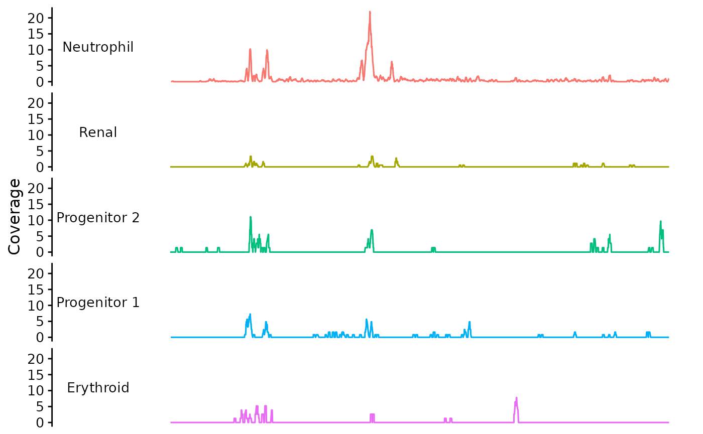
For this function, the default y variable is “coverage” and the facet and color variables are “group”. These are the default because this is how Signac/Seurat objects hold the data. You set the “group” variable values by using the Idents function to operate on the Signac object before making the Trace object. If there are other variables you wish to display you should add them to the group variable
dat <- Trace.data(zf_prkcda_trace) |>
plyranges::mutate(group_alt = paste0(group, "_alt"))
zf_prkcda_trace <- Trace.setData(zf_prkcda_trace, gr = dat)
bb_plot_trace_data(zf_prkcda_trace, facet_var = "group_alt", color_var = "group_alt")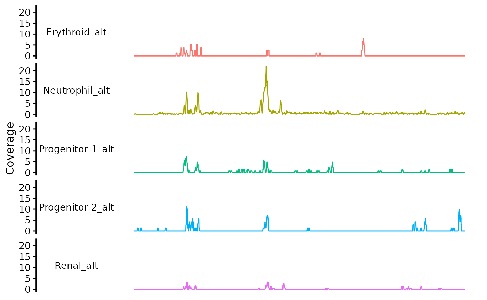
You can set the color palette:
dat <- Trace.data(zf_prkcda_trace) |>
plyranges::mutate(group_alt = paste0(group, "_alt"))
zf_prkcda_trace <- Trace.setData(zf_prkcda_trace, gr = dat)
cols <- RColorBrewer::brewer.pal(n = 5, name = "Set1")
alt_pal <- c("Erythroid_alt" = cols[1],
"Neutrophil_alt" = cols[2],
"Progenitor 1_alt" = cols[3],
"Progenitor 2_alt" = cols[4],
"Renal_alt" = cols[5]
)
bb_plot_trace_data(zf_prkcda_trace,
facet_var = "group_alt",
color_var = "group_alt",
pal = alt_pal)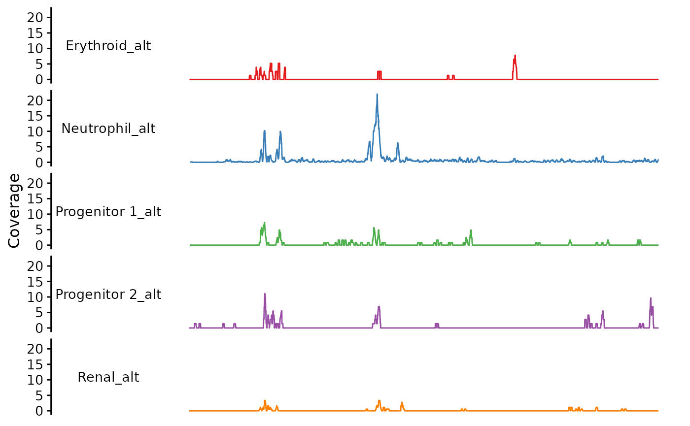
You can stack the traces if you want:
bb_plot_trace_data(zf_prkcda_trace,
facet_var = NULL,
color_var = "group_alt",
pal = alt_pal,
legend_pos = "right")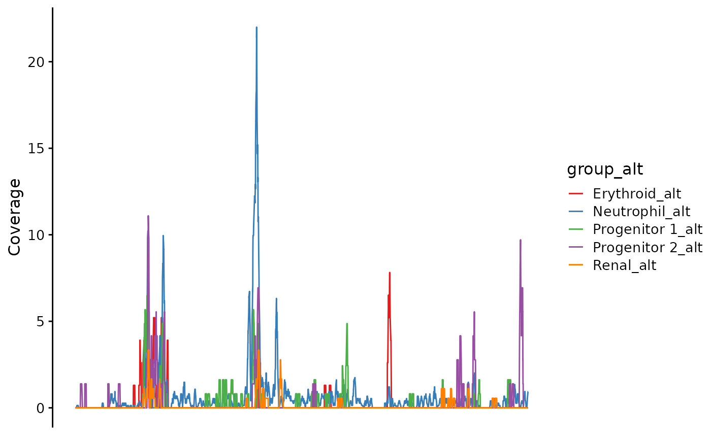
For bulk data, you may have imported the values you want to plot under another variable name
Trace.data(e4_PRKCD_trace)
#> GRanges object with 7661 ranges and 2 metadata columns:
#> seqnames ranges strand | group coverage
#> <Rle> <IRanges> <Rle> | <character> <numeric>
#> [1] chr3 53151013-53151026 * | bulk 0.20260
#> [2] chr3 53151027-53151029 * | bulk 0.20197
#> [3] chr3 53151030-53151032 * | bulk 0.40412
#> [4] chr3 53151033-53151036 * | bulk 0.60609
#> [5] chr3 53151037-53151069 * | bulk 0.60799
#> ... ... ... ... . ... ...
#> [7657] chr3 53197667 * | bulk 0.17298
#> [7658] chr3 53197668-53197688 * | bulk 0.08645
#> [7659] chr3 53197689-53197692 * | bulk 0.08634
#> [7660] chr3 53197693-53197696 * | bulk 0.08623
#> [7661] chr3 53197697-53197714 * | bulk 0.08611
#> -------
#> seqinfo: 1 sequence from hg38 genome; no seqlengthsPlotting the Gene Model
This plots the underlying gene model from the reference genome. By default it picks the APPRIS prinicpal1 transcript for each gene. UTRs are shown in half the height of coding exons.
bb_plot_trace_model(zf_prkcda_trace)Or you can show a specific transcript. There is only 1 transcript for this gene.
bb_plot_trace_model(zf_prkcda_trace, select_transcript = "ENSDART00000033819")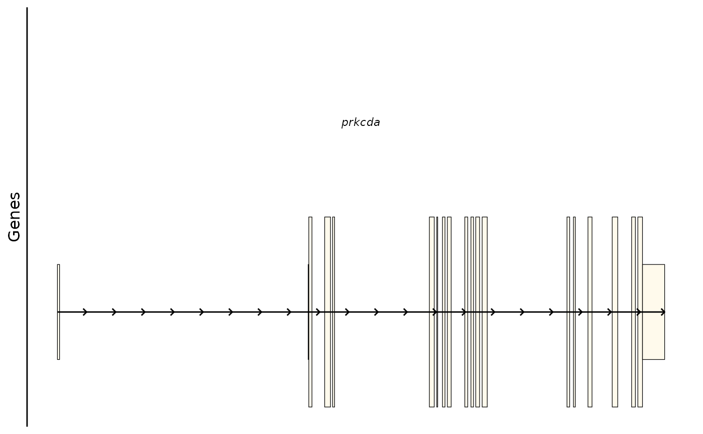
Here is the same gene in humans with multiple transcripts:
# prinicpal1 transcript
bb_plot_trace_model(e4_PRKCD_trace)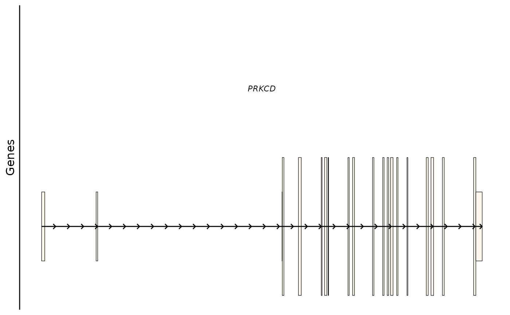
# an alternative transcript
bb_plot_trace_model(e4_PRKCD_trace, select_transcript = "ENST00000651505")If you want you can change the fill color of the exon icons:
# prinicpal1 transcript
bb_plot_trace_model(e4_PRKCD_trace, icon_fill = "orange")Plotting Links
This function plots bezier curves between the center of linked peaks. The color in the figure indicates the link score.
bb_plot_trace_links(zf_prkcda_trace)In this case, the color scale could be scaled differently to show the differences more clearly.
bb_plot_trace_links(zf_prkcda_trace, link_range = c(0.4,0.8))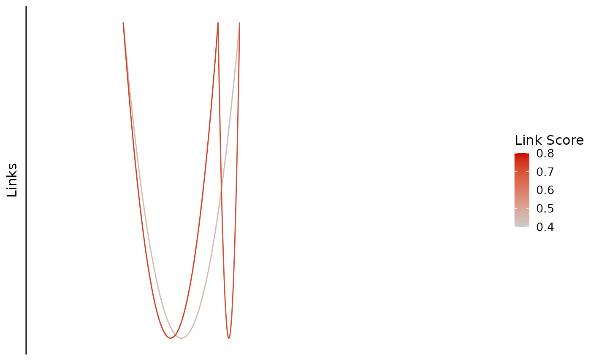
You can also change the colors.
bb_plot_trace_links(zf_prkcda_trace,
link_range = c(0.4,0.8), link_low_color = "purple", link_high_color = "green")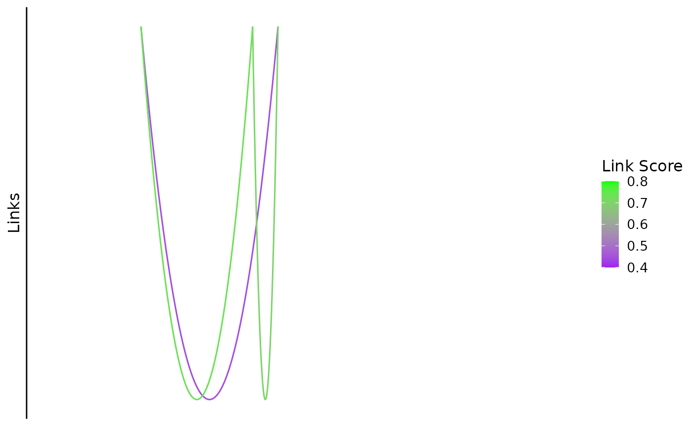 If there are link scores outside the range, they will be shown in dark grey which is a default for ggplot:
bb_plot_trace_links(zf_prkcda_trace,
link_range = c(0.5,0.8),
link_low_color = "purple",
link_high_color = "green")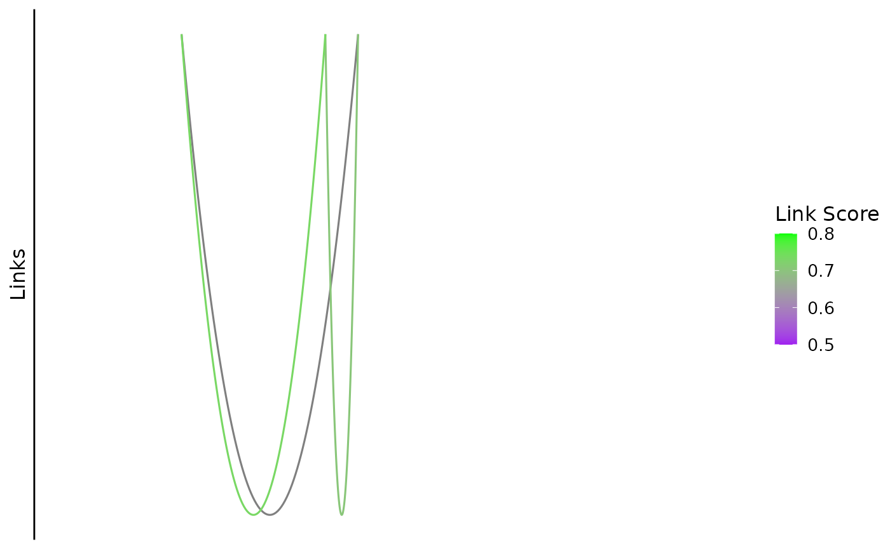
You can also trim those using the cutoff parameter (default is 0, no cutoff)
bb_plot_trace_links(zf_prkcda_trace,
link_range = c(0.5,0.8),
link_low_color = "purple",
link_high_color = "green",
cutoff = 0.5)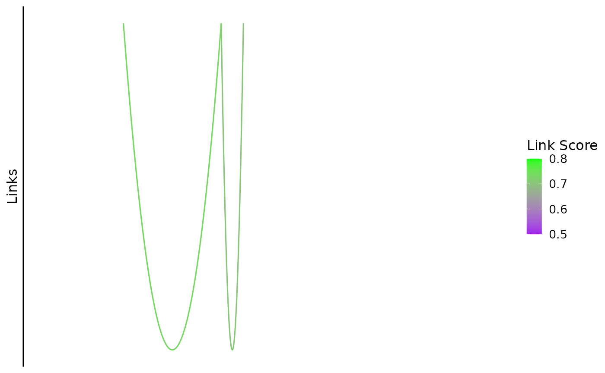
Note: links that extend outside the plot range are also trimmed.
Plotting the Axis
The default shows the plot range in kb, indicating the genome and the chromosome:
bb_plot_trace_axis(zf_prkcda_trace)
You can add a custom axis title if you want. You can do this in the function or as a separate layer.
bb_plot_trace_axis(zf_prkcda_trace, xtitle = "My Custom Title")
bb_plot_trace_axis(zf_prkcda_trace) + labs(x = "Another Custom Title")As we will see in the next section, putting these modifications within the function calls, rather than as separate layers makes the code look cleaner.
Putting the Plot Together
We use patchwork to compose the tracks into a full plot:
library("patchwork")
bb_plot_trace_data(zf_prkcda_trace) /
bb_plot_trace_model(zf_prkcda_trace) /
bb_plot_trace_peaks(zf_prkcda_trace) /
bb_plot_trace_links(zf_prkcda_trace) /
bb_plot_trace_axis(zf_prkcda_trace)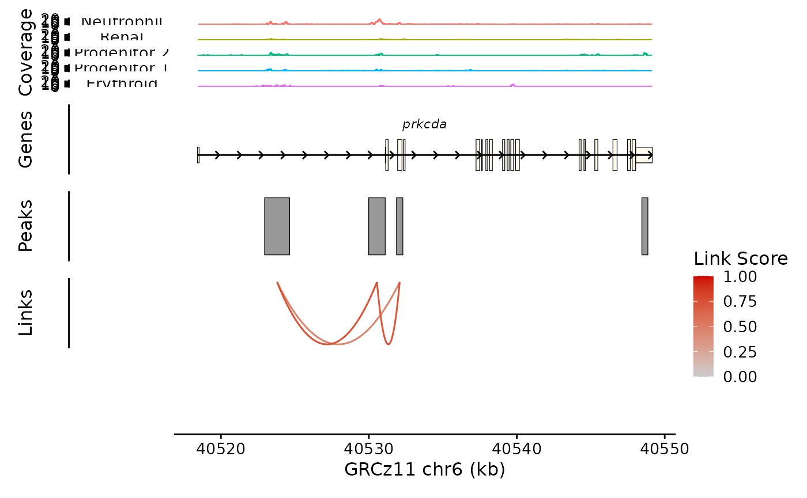
This needs some help, so we add a plot layout function call:
bb_plot_trace_data(zf_prkcda_trace) /
bb_plot_trace_model(zf_prkcda_trace) /
bb_plot_trace_peaks(zf_prkcda_trace) /
bb_plot_trace_links(zf_prkcda_trace, link_range = c(0.4,0.8)) /
bb_plot_trace_axis(zf_prkcda_trace) +
plot_layout(heights = c(5,1,1,1,0.01), guides = "collect")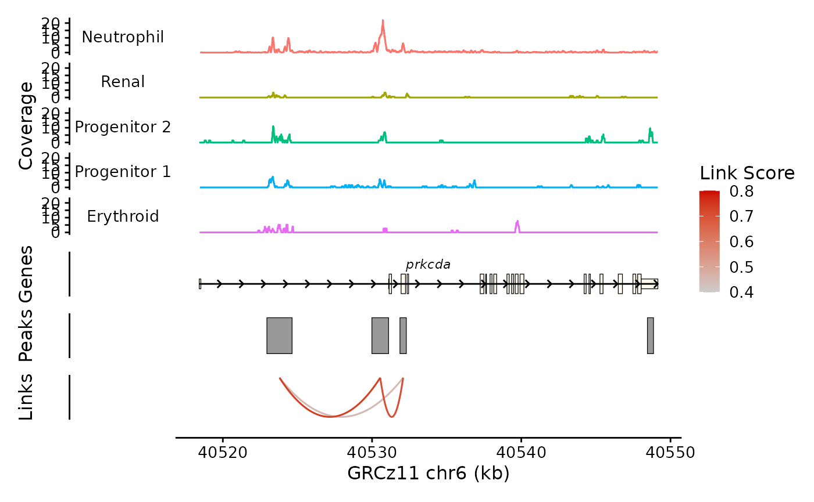
This looks pretty good, but the Coverage plot y axes are a little cramped at this size:
(bb_plot_trace_data(zf_prkcda_trace) + scale_y_continuous(breaks = c(0,20))) /
bb_plot_trace_model(zf_prkcda_trace) /
bb_plot_trace_peaks(zf_prkcda_trace) /
bb_plot_trace_links(zf_prkcda_trace, link_range = c(0.4,0.8)) /
bb_plot_trace_axis(zf_prkcda_trace) +
plot_layout(heights = c(5,1,1,1,0.01), guides = "collect")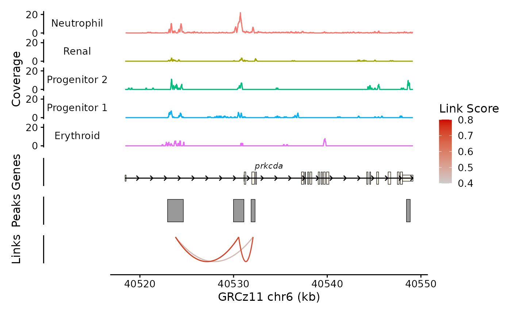
This looks better. Note that I have to enclose the ggplot layers in parentheses to keep from confusing patchwork. Not the end of the world.
It also works for bulk data:
bb_plot_trace_data(e4_PRKCD_trace) /
bb_plot_trace_model(e4_PRKCD_trace) /
bb_plot_trace_peaks(e4_PRKCD_trace) /
bb_plot_trace_axis(e4_PRKCD_trace) +
plot_layout(heights = c(3,1,1,0.01))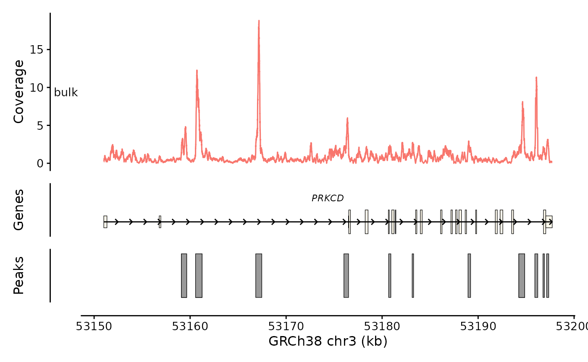
This is good, but the facet variable is weird. The “bulk” term is a
placeholder that was introduced when I made the object. I can silence
the facet variable by setting facet_var = NULL to make this
go away.
bb_plot_trace_data(e4_PRKCD_trace, facet_var = NULL) /
bb_plot_trace_model(e4_PRKCD_trace) /
bb_plot_trace_peaks(e4_PRKCD_trace) /
bb_plot_trace_axis(e4_PRKCD_trace) +
plot_layout(heights = c(3,1,1,0.01))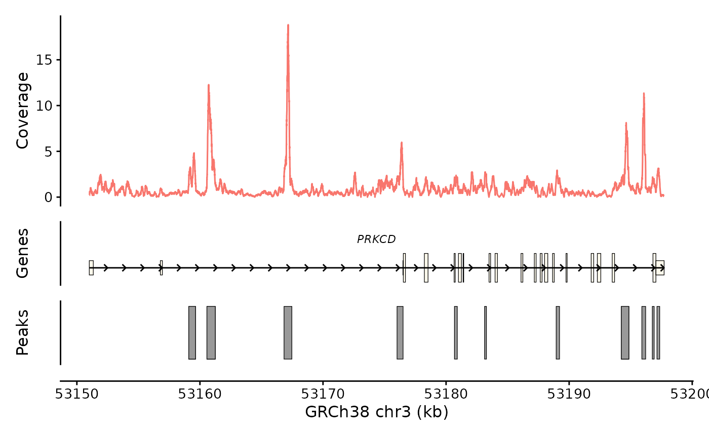
Or I can put some meaningful information in the facet variable to serve as a helpful title:
dat <- Trace.data(e4_PRKCD_trace) |>
plyranges::mutate(group = "E4-HUVEC")
e4_PRKCD_trace_alt <- Trace.setData(e4_PRKCD_trace, dat)
bb_plot_trace_data(e4_PRKCD_trace_alt) /
bb_plot_trace_model(e4_PRKCD_trace_alt) /
bb_plot_trace_peaks(e4_PRKCD_trace_alt) /
bb_plot_trace_axis(e4_PRKCD_trace_alt) +
plot_layout(heights = c(3,1,1,0.01))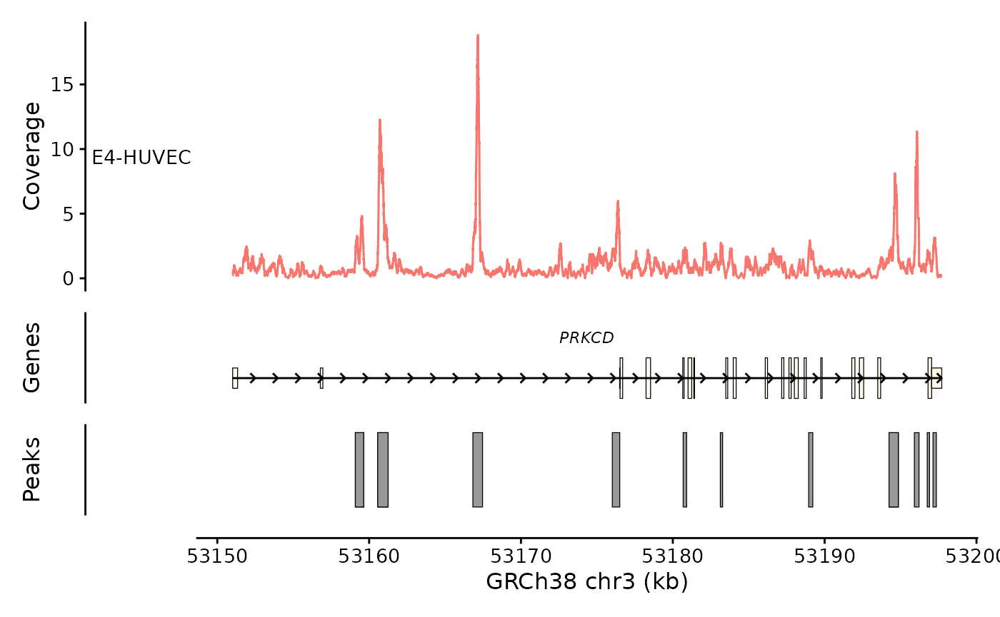